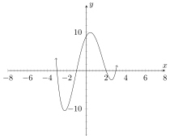
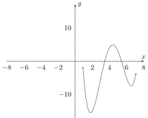

This section describes the geometric perspective of Rigid Translations.
The geometric view
Here is a video!
_
The result of a rigid translation is incredibly apparent when looking at the
graph (before and after) of the function. The result is also more easily stated
(at least in terms of what is happening to the graph) in geometric terms.
In essence, a rigid translation changes the graph of the function in a very
specific way; by “picking up the function and moving it’s location on the -
plane”. The key observation is that the only thing that changes about the
graph is its position on the - plane. The graph is only moved left/right or
up/down, but it is not stretched, squished, rotated, flipped, or anything
else.
Consider the following example:

An example of a rigid translation would be to move the graph to the right by and
down by . That would change the above graph to the following:

As we can see, we appear to have the same curve (the same ‘graph’) but it moved to
a different location on the plane.
(When we say move, we mean that it moved
left/right up/down, it didn’t rotate, stretch, or otherwise change it’s orientation or
shape/size on the - plane.) This is how we know the transformation we
applied is a rigid transformation. Another way of putting this is that you
can envision the curve on the - plane is made of cast iron or titanium and
you are merely allowed to slide it around; left/right, or up/down. In our
example we slid it to the right by units and down by units, but the curve
itself remained exactly as it was; it has the same shape and didn’t rotate or
stretch.
Generally we don’t want to have to write out descriptions of rigid translations
when discussing them however, so instead we use the analytic form (algebra
and function notation) to concisely describe this behavior. We discuss this
next.
1 : A rigid translation is...
The process of shifting a graph horizontally or
vertically.The process of stretching a graph horizontally or vertically.The
process of moving a graph horizontally or vertically without changing the size or
shape of the graph.The process of flipping and/or deforming a graph.The
process of moving a graph around.